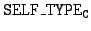
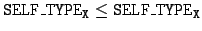

The type SELF_TYPE is used to refer to the type of the self variable. This is useful in classes that will be inherited by other classes, because it allows the programmer to avoid specifying a fixed final type at the time the class is written. For example, the program
class Silly {
copy() : SELF_TYPE { self };
};
class Sally inherits Silly { };
class Main {
x : Sally <- (new Sally).copy();
main() : Sally { x };
};
Because SELF_TYPE is used in the definition of the copy method,
we know that the result of copy is the same as the
type of the self
parameter. Thus, it follows that (new Sally).copy() has
type Sally, which conforms to the declaration of attribute x.
Note that the meaning of SELF_TYPE is not fixed, but depends on the class in which it is used. In general, SELF_TYPE may refer to the class C in which it appears, or any class that conforms to C. When it is useful to make explicit what may refer to, we use the name of the class C in which SELF_TYPE appears as an index . This subscript notation is not part of Cool syntax--it is used merely to make clear in what class a particular occurrence of SELF_TYPE appears.
From Definition 4.1, it follows that
.
There is also a special conformance rule for SELF_TYPE:
Finally, SELF_TYPE may be used in the following places: new SELF_TYPE, as the return type of a method, as the declared type of a let variable, or as the declared type of an attribute. No other uses of SELF_TYPE are permitted.